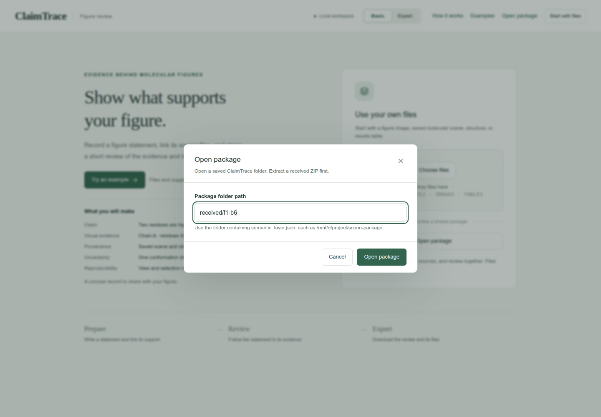
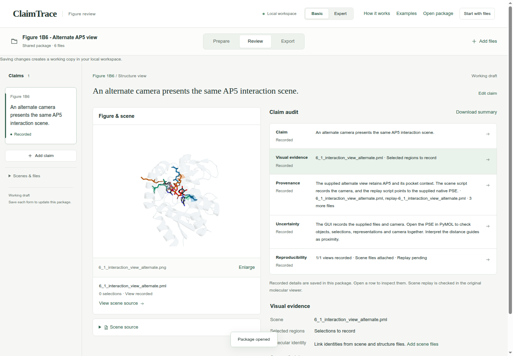
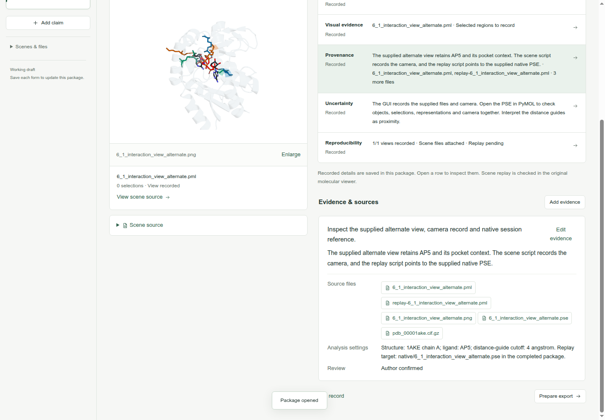
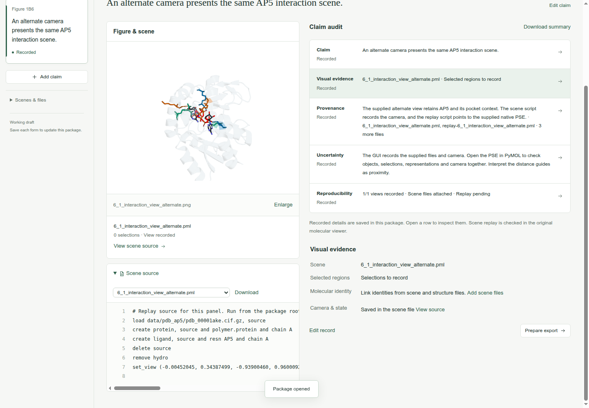
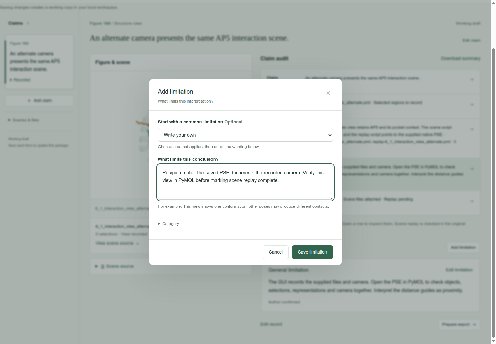
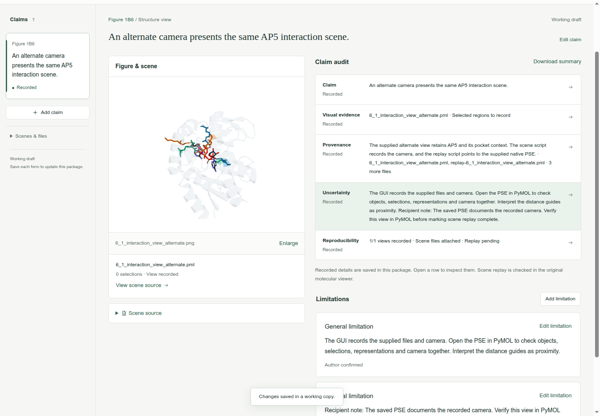
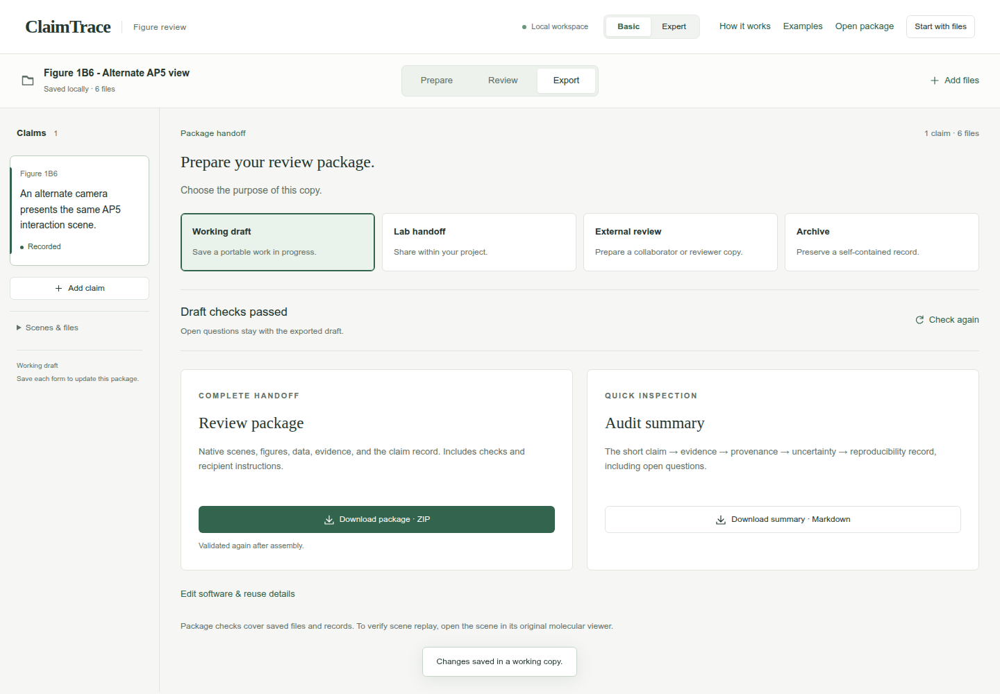
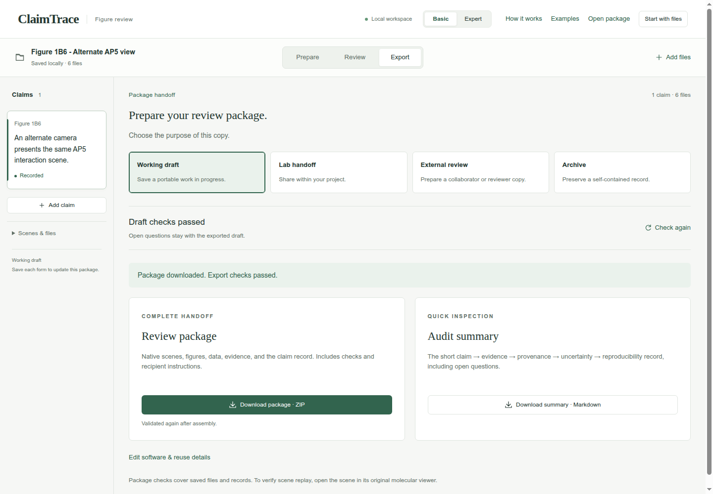

Browse the guide
Start hereAll 12 casesDescribe molecular views
Figure 1B1Pocket visibilityFigure 1B5Local to global contextFigure 1B6Preserve an alternate AP5 interaction viewCheck contacts and distances
Figure 1B2Contacts across viewsFigure 4ADocument conserved pocket-water selectionFigure 4CCheck short ligand contactsFigure 4DRecord an Asp110-ligand distanceCompare models and ensembles
Figure 1B3Confidence and geometryFigure 1B4AP5 conformational clustersFigure 4BCompare ranked ligand posesReview trajectories
Figure 4ETrace interaction state changesFigure 4FCompare trajectory repeatsShare and continue
Open a review packageOpen and continue a review package
Inspect a completed example, add a reader note, and export your own working copy.
Use the path to your extracted package folder. The screenshot shows the path used for this walkthrough.
- 1. Open the extracted package
- 2. Read the claim audit
- 3. Inspect the provenance
- 4. Read the scene source
- 5. Add a reader note
- 6. Save your working copy
- 7. Check the updated draft
- 8. Download the updated package
Open the extracted package
Download the Figure 1B6 completed example and extract the ZIP. In ClaimTrace, click Open package. Paste the path of the extracted package folder on the computer running ClaimTrace, then click Open package. The path below is the folder used for this walkthrough.
| Package folder path | /tmp/ClaimTrace-review-example/f1-b6 |
|---|
Check: Shared package · 6 files appears. The page explains that saving changes creates a working copy.

Read the claim audit
Click Review. Read the figure statement and the five audit rows. Check the saved figure alongside the interpretation.
Check: The alternate AP5 view is linked to its claim. Reproducibility includes Replay pending.

Inspect the provenance
Click the Provenance row. Scroll to Evidence & sources to read the saved finding, source list and analysis settings.
Check: Evidence & sources shows the alternate-view source inspection and its linked files.

Read the scene source
Click View scene source below the figure. Inspect the load, selection and set_view commands. Use Download beside the source selector to save the original file when needed.
Check: Scene source opens with the PML text and its saved camera command.

Add a reader note
Click the Uncertainty row, then Add limitation. Keep Write your own selected and enter the note below.
| What limits this conclusion? | Recipient note: The saved PSE documents the recorded camera. Verify this view in PyMOL before marking scene replay complete. |
|---|
Check: The note is ready to save with the current claim.

Save your working copy
Click Save limitation. Check the location label and confirmation message.
Check: The location shows Saved locally · 6 files. The page confirms: Changes saved in a working copy.

Check the updated draft
Click Export. Keep Working draft selected and confirm Draft checks passed.
Check: Download package · ZIP is available.

Download the updated package
Click Download package · ZIP. Check your browser’s downloads for claimtrace-review.zip, then save it in a folder for your reviewed copy.
Check: The page confirms: Export checks passed. Your browser will download the package.

Your saved result
A new Working draft ZIP containing the recipient note. The received package remains byte-for-byte unchanged.